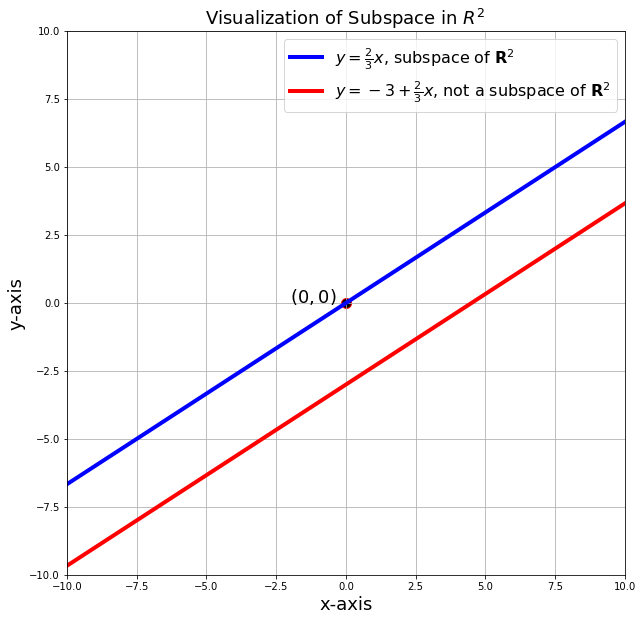
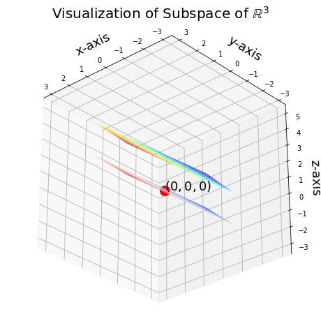

Vector Space and Subspaces
- Vector Spaces
- Notations
- Dimensions
- Vector Space
- Subspaces
- Geometric Definition (Subspaces)
- Algebraic Definition (Subspaces)
- Example and Intuition of Subspaces
- Theorem (The Subspace Criterion)
- Proof
- Linear Combination (Definition revisited)
- Theorem (Closure Linear Combination implies Subspace)
- Vector subspaces of \(\mathbb{R}^2\)
- Examples of Non-Subspace
- Visualization of Subspaces in \(\mathbb{R}^2\)
- Vector subspaces of \(\mathbb{R}^3\)
- Visualization of Subspaces in \(\mathbb{R}^3\)
- Theorem (Intersection of Subspaces is a Subspace)
- Proof
- Union of Two Subspaces may not be a Subspace
- Ambient Space
Vector Spaces
Notations
For this section, we will treat our field \(\F\) to be the real space \(\R\); and when we later mention vector space or vector subspace \(V\), we actually mean the vector space/subspace over the field \(\R\).
Dimensions
Normally, dimensions are formally defined after the introduction of basis. We will give an informal treatment of dimension here to better understand the idea when mentioning this word.
Algebraic Definition (Dimension)
Algebraic Definition
Consider a vector \(\v \in \R^n\), then we can represent
and we can naively define the dimension of the vector to be the number of elements:
Geometric Definition (Dimension)
Geometric Definition
The dimensionality of a vector is the number of coordinate axes in which that vector exists. A 2D vector is a line in a 2D space (think of the typical Cartesian XY plane); a 3D vector is a line in a 3D space. Note that both a 2D vector and a 3D vector are both lines, but they exist in a different number of dimensions. - Mike X Cohen: Linear Algebra: Theory, Intuition, Code, 2021. (pp. 76)
Vector Space
Definition (Vector Space)
Definition (Vector Space)
A vector space is a set \(V\) consisting of the following:
a) a field \(\F\), where the elements in \(\F\) are called scalars.
b) a non empty set \(V\), where the elements in \(V\) are called vectors (be less pedantic about the word vectors as we can treat say polynomial ring as a vector space and we can also treat a field \(\F\) over itself as a vector space as well. So the word vectors here are not only the usual ones we see in "vectors")
c) an operation of vector addition \(\u + \v\) between every pair of vectors \(\u, \v \in V\) and
d) an operation of scalar multiplication \(\lambda\v\) between every \(\lambda \in \F\) and every vector \(\v \in V\).
Furthermore, all elements in \(V\) must satisfy the closure properties and the following axioms:
-
\(\textbf{V(0)}: \textbf{Closure (Well Defined)}\): For all \(\mathbf{u,v} \in V, \mathbf{u+v} \in V\); For all \(\lambda \in \F\) and \(\v \in V\), then \(\lambda \v \in V\); Consequently, all linear combinations of vectors in \(V\) is in \(V\).
-
\(\textbf{V(1)}: \textbf{Existence of the Zero Vector (Additive Identity)}\): There exists a vector \(\mathbf{0} \in V\), called the zero vector, such that \(\mathbf{v + 0 = u = 0+v}\) for all \(\v \in V\). We should know it is unique.
-
\(\textbf{V(2)}: \textbf{Commutative Law for Vector Addition}\): For all \(\mathbf{u,v} \in V\), \(\mathbf{u+v = v+u}\).
-
\(\textbf{V(3)}: \textbf{Associative Law for Vector Addition}\): For all \(\mathbf{u,v,w} \in V\), we have \(\mathbf{u + (v+w)} = \mathbf{(u+v)+w}\).
-
\(\textbf{V(4)}: \textbf{Existence of Additive Inverse}\): For every vector \(\v \in V\), there exists a vector \(-\v \in V\) such that \(\mathbf{v+(-v) = 0 = (-v)+v}\).
-
\(\textbf{V(5)}: \textbf{Existence of the Multiplicative Identity}\): There exists \(\mathbf{1}\in V\) such that \(\mathbf{1} \times \v = \v \times \mathbf{1} = \v\) for all \(\v \in \F\).
-
\(\textbf{V(6)}: \textbf{Associative Law for Vector-Scalar Multiplication}\): For all \(a,b \in \F\) and \(\v \in V\), we have \(a(b\v) = (ab)\v\)
-
\(\textbf{V(7)}: \textbf{Distributive Law}\):
- \(a(\mathbf{u+v}) = a\u + a\v ,~~~\forall a \in \F, \mathbf{u,v} \in V\)
- \((a+b)\v = a\v + b\v,~~~\forall a,b \in \F, \v \in V\).
Vector Space over a Field
Warning
Note carefully that a vector space \(V\) is dependent on the field \(\F\) since scalar multiplication draws \(\lambda\) from \(\F\). Thus, we don't usually talk only about vector space \(V\) alone, instead we use the notion of Vector Space over a Field \(\F\).
Example of Vector Spaces over a Field
Real Vector Space
- We can imagine elements \(\v \in V\) as vectors/lines/points.
- We can take the field \(\F\) to be \(\R\).
- Then a vector space \(V\) over \(\R\) is called the real vector space.
Subspaces
Geometric Definition (Subspaces)
For a better treatment of understanding subspaces geometrically, do read page 79-80 of the book Linear Algebra: Theory, Intuition, Code.
Algebraic Definition (Subspaces)
Algebraic Definition (Subspaces)
Let \(V\) be a vector space over a field \(\F\). A non empty subset \(W \subseteq V\) of a vector space \(V\) is called a subspace of \(V\) if \(W\) is itself a vector space using the same vector addition and scalar multiplication as in \(V\).
Consequence
Let \(W \subset V\) and \(\w \in W\), we must show that \(W\) obeys all conditions from the definition of a vector space. For any \(\w \in W\), we must have \(w \in V\) by definition of a subset; this means that \(V2,V3,V5,V6,V7\) are automatically true since \(\w \in W \subset V\). We just need to check if it satisfies \(V0,V1,V6\), namely, the two closure properties, the existence of zero vector, and the existence of the additive inverse for vector addition.
We take V2 as an example, take any two elements \(\w_1, \w_2 \in W\), then \(\w_1, \w_2 \in V\), and hence obeys V2. But we cannot say for sure about V1, as there is no guarantee the subset \(W\) will contain the zero vector!
Example and Intuition of Subspaces
Example and Intuition of Subspaces
Let us start with an informal treatment of a subspace. First, we say that a subspace \(W\) of \(V\) must fulfill two conditions:
- \(W\) is a subset of \(V\) and;
- \(W\) is a vector space itself over the field \(\F\).
The classic example of a \(3\)-dimensional real vector space is the Euclidean space \(\mathbb R^3\) where \(\R^3 = \{(x,y,z)~|~x,y,z \in \R\}\), which is the 3-dimensional space, or to be more formal, it is the vector space \(V\) over \(\R\), a collection of all 3-tuple vectors.
Now, consider the set \(L = \{\lambda(1,2,3) ~|~ \lambda \in \R\}\), we check that the set \(L\) informally satisfies our conditions to be a subspace of \(\R^3\).
-
I emphasized the word set because of the idea of subset, that is, a vector subspace first must be a subset of the vector space. Our \(L\) is a subset of \(\R^3\) by definition, in fact, it is the set of all lines of the form \(\lambda(1,2,3)\).
-
Only being a subset is not sufficient to be called a subspace, we have fulfilled the idea of a subset, but not the space part. It suffices to check if our \(L\) is a valid vector space over \(\R\). And to check that we can use back the definition of vector space to do so.
The main point is that a single vector, \((1,2,3)\) scaled by any \(\lambda \in \R\) makes up a subspace. It also happens to be the 1D-subspace which is just a line. It is also important to mention that the line must pass through the origin to be considered a subspace.
Next, consider the set \(P = \{\lambda_1(1,0,0) + \lambda_2(0,0,1) ~|~ \lambda_i \in \R\}\). Geometrically, we have known from earlier that these two vectors form a 2D-plane and we will show later that it is the 2D-subspace, a plane.
Theorem (The Subspace Criterion)
From the previous section, we know that we just need to check V0, V1 and V4 to be true. This reduces our conditions for \(W \subset V\) to be a subspace to be as follows:
Theorem (The Subspace Criterion)
Let \(V\) be a vector space over a field \(\F\). A subset \(W\) of \(V\) is a subspace of \(V\) if and only if
S1) \(\textbf{(Containing the Zero Vector)}\): \(\0 \in W\) ;
S2) \(\textbf{(Closure under Vector Addition)}\): \(\forall \mathbf{u,w} \in W, \u+\w \in W\)
S3) \(\textbf{(Closure under Scalar Multiplication)}\): \(\forall \lambda \in \F\) and \(\w \in W\), we have \(\lambda\w \in W\).
Proof
Proof
\(\Rightarrow\) If \(W\) is also a subspace, then by the definition of subspace, \(W\) is also a vector space, and hence \(S1,S2,S3\) are satisfied.
\(\Leftarrow\) We should be clear that for other conditions V2, V3, V5, V6 and V7 do not warrant checking since these axioms are automatically satisfied for \(W\) since it holds for the larger subset \(V\). We need only check the following:
Zero Vector: If S1 is satisfied, then the corresponding V1 is satisfied.
Closure Properties: S2 and S3 both implies V0.
Additive Inverse for Vector Addition: Let \(\w \in W\), take \(-1 \in \F\), by S3 (closure of scalar multiplication), we must have \(-1(\w) \in W\).$ This implies V4.
One thing that you notice is that by the closure of addition \(\mathbf{w+(-w)} = \mathbf{0} \in W\) or by the closure of scalar multiplication \(0 \cdot \w = \0 \in W\) (note \(0 \in \F\)). Consequently, this implies that S2 and S3 are sufficient to imply S1. You can trace the proof by ignoring the S1.
Linear Combination (Definition revisited)
Definition
Let \(V\) be a vector space over a field \(\F\). A vector \(\v\) is a linear combination of vectors \(\mathbf{v_1,v_2,...,v_m} \in V\) if
\(\(\v = \lambda_1\v_1+...+\lambda_m\mathbf{v_m}\)\) for some scalars \(\lambda_i \in \F\).
Theorem (Closure Linear Combination implies Subspace)
Theorem (Closure Linear Combination implies Subspace)
Let \(V\) be a vector space over a field \(\F\) and \(W\subseteq V\) a non empty subset. Then \(W\) is a subspace of \(V\) if and only if \(W\) is closed under linear combination, (i.e \(\forall \lambda_i \in \F, \forall \mathbf{w_i} \in W \Rightarrow \lambda_1\w_1+ \lambda_2\w_2 \in W\)).
This should not come as a surprise as this is just a rebranding of Conditions to be a Subspace Theorem (Equivalent Subspace Definition).
Vector subspaces of \(\mathbb{R}^2\)
There are three types of vector subspaces of the vector space \(\mathbb{R}^2\).
i) The origin \(\mathbf{0} = \{0,0\}\)
ii) The line through the origin : \(L = \{\lambda\v~|~\lambda \in \mathbb{R}, \v \in \R^2\}\)
iii) \(\mathbb{R}^2\)
Examples of Non-Subspace
Non-Subspace
Consider the set \(L = \{\lambda (0, -3) ~|~ \lambda \in \R\}\), why is it not a subspace of \(\R^2\)?
Though one can answer that since this line does not pass through the origin, and thus does not contain the zero vector, hence not a subspace, we can take a step back and think of it geometrically:
We can check whether the line is closed under addition and vector-scalar multiplication. Geometrically, it seems that any two vectors inside the set will still be in the set since adding or subtracting vectors inside is just "line + line | line - line", which still lies on the same line. It is easy to gloss over that if you take \(\v\) and \(-\v\) from the set \(L\), then the sum is the zero vector, which is not inside \(L\). This can be further verified by vector-scalar, we can just take \(0 \in \R\), and claim that \(0\v\) for all \(\v \in L\) is not in \(L\)!
Visualization of Subspaces in \(\mathbb{R}^2\)
Courtesy of MacroAnalyst's Linear Algebra with Python. Notice that the line \(y = -3 + \frac{2}{3}x\) does not pass through the origin \((0, 0)\), and hence not a subspace. Note this example (line) is the set \(L\) in the previous example.
import matplotlib.pyplot as plt
import numpy as np
fig, ax = plt.subplots(figsize=(10, 10))
####################### Arrows #######################
x = np.arange(-10, 11, 1)
y = 4 / 6 * x
ax.plot(
x,
y,
lw=4,
color="blue",
label=r"$y = \frac{2}{3}x$, subspace of $\mathbf{R}^2$",
)
y = -3 + 4 / 6 * x
ax.plot(
x,
y,
lw=4,
color="red",
label=r"$y = -3+\frac{2}{3}x$, not a subspace of $\mathbf{R}^2$",
)
ax.grid(True)
ax.set_title("Visualization of Subspace in $R^2$ ", size=18)
ax.scatter(0, 0, s=100, fc="black", ec="red")
ax.text(-2, 0, "$(0,0)$", size=18)
ax.legend(fontsize=16)
ax.axis([-10, 10, -10, 10])
ax.set_xlabel("x-axis", size=18)
ax.set_ylabel("y-axis", size=18)
plt.show()

Vector subspaces of \(\mathbb{R}^3\)
There are four types of vector subspaces of the vector space \(\mathbb{R}^3\).
i) The origin \(\mathbf{0} = \{0,0,0\}\)
ii) The line \(L\) passing through the origin: \(L = \{\lambda \v~|~\lambda \in \mathbb{R}, \v \in \R^3\}\)
iii) A plane \(P\) passing through the origin: \(P = \{(x,y,z) \in \mathbb{R}^3~|~ ax + by + cz = 0\}\)
iv) \(\mathbb{R}^3\)
Visualization of Subspaces in \(\mathbb{R}^3\)
Courtesy of MacroAnalyst's Linear Algebra with Python.
We have not learnt of the term span, but for now when we say a span of two vectors \(\u\) and \(\v\) in \(\R^3\), it means these two vectors are not multiple of each other.
Consider a span of two vectors \(u = (1,-2,1)^T\) and \(v=(2,1,2)^T\). The span of \((u,v)\) is a subspace of \(\R^3\), where \(s\) and \(t\) are the scalars of the vectors.
We also plot a plane which is not a subspace by adding \(2\) to the third equation: \(z = s + 2t + 2\).
import matplotlib.pyplot as plt
import numpy as np
# %matplotlib
# %matplotlib notebook, use this only if you are in Jupyter Notebook
fig = plt.figure(figsize=(8, 8))
ax = fig.add_subplot(111, projection="3d")
s = np.linspace(-1, 1, 10)
t = np.linspace(-1, 1, 10)
S, T = np.meshgrid(s, t)
X = S + 2 * T
Y = -2 * S + T
Z = S + 2 * T
ax.plot_surface(X, Y, Z, alpha=0.9, cmap=plt.cm.coolwarm)
Z2 = S + 2 * T + 2 # this is not a subspace anymore
ax.plot_surface(X, Y, Z2, alpha=0.6, cmap=plt.cm.jet)
ax.scatter(0, 0, 0, s=200, color="red")
ax.text(0, 0, 0, "$(0,0,0)$", size=18, zorder=5)
ax.set_title("Visualization of Subspace of $\mathbb{R}^3$", x=0.5, y=1.1, size=20)
ax.set_xlabel("x-axis", size=18)
ax.set_ylabel("y-axis", size=18)
ax.set_zlabel("z-axis", size=18)
ax.view_init(elev=-29, azim=132)
plt.show()

Theorem (Intersection of Subspaces is a Subspace)
Theorem (Intersection of Subspaces is a Subspace)
Let \(V\) be a vector space over a field \(\F\) and let \(W_\alpha \subseteq V\) (\(\alpha \in I\)) be vector subspaces of \(V\), then the intersection \(\(\cap_{\alpha \in I}W_\alpha\)\) is again a vector subspace of \(V\).
Proof
Proof
Before we start, the intuition is simple, call \(C = A \cap B\), and to think intuitively that \(C\) is itself a subspace, we just take an element \(\mathbf{c_1}, \mathbf{c_2} \in C\) and \(\lambda \in \F\), and ask whether these vectors obey the closure property. For a start, for any two vectors in \(C\), they are closed under addition because both vectors are elements of \(A\) and (or) \(B\).
Let \(W_1\) and \(W_2\) be subspaces of a vector space \(V\), then it suffices for us to just prove \(W_1 \cap W_2\) is a subspace of \(V\) as we can use induction to prove for \(n\) intersections.
We denote the subset \(W_1 \cap W_2\) to be \(U\).
Closed under Vector Addition: To show that \(U\) has closure properties, we take any element \(\mathbf{u_1}, \mathbf{u_2} \in U\), any \(\lambda \in \mathbb{F}\) and show that \(\mathbf{u_1} + \mathbf{u_2} \in U\) and \(\lambda \mathbf{u} \in U\).
Since \(\mathbf{u_1}, \mathbf{u_2} \in U\), then \(\mathbf{u_1}, \mathbf{u_2} \in W_1\) and \(\mathbf{u_1}, \mathbf{u_2} \in W_2\) respectively. This means that \(\mathbf{u_1} + \mathbf{u_2} \in W_1\) and \(\mathbf{u_1} + \mathbf{u_2} \in W_2\) since both \(W_1\) and \(W_2\) are closed under addition. Consequently, another way of saying \(\mathbf{u_1} + \mathbf{u_2} \in W_1\) and \(\mathbf{u_1} + \mathbf{u_2} \in W_2\) is \(\mathbf{u_1} + \mathbf{u_2} \in W_1 \cap W_2 = U\), which implies that \(U\) is closed under vector addition.
Closed under Vector-Scalar Multiplication: The same line of logic can be applied for closure under vector-scalar multiplication.
We have shown that \(W_1 \cap W_2\) is a subspace.
Union of Two Subspaces may not be a Subspace
The union of two subspaces may not be a subspace.
The reason why this can happen is that all vector spaces, and hence subspaces too, must be closed under addition (and scalar multiplication). The union of two subspaces takes all the elements already in those spaces, and nothing more. In the union of subspaces \(W_1\) and \(W_2\), there are new combinations of vectors we can add together that we couldn't before, like \(\w_1 + \w_2\) where \(\w_1 \in W_1\) and \(\w_2 \in W_2\).
For example, take \(W_1\) to be the \(x\)-axis and \(W_2\) the \(y\)-axis, both subspaces of \(\mathbb{R}^2\). Their union includes both \((3,0)\) and \((0,5)\), whose sum, \((3,5)\), is not in the union. Hence, the union is not a vector space.
Ambient Space
The term ambient space is used frequently in the book. We can understand it with an example:
Example
If you are dealing with a vector subspace \(U\) as a subset of \(\mathbb R^2\), the ambient space is \(\mathbb R^2\). So basically, the ambient space is the "parent space" of the subspace.